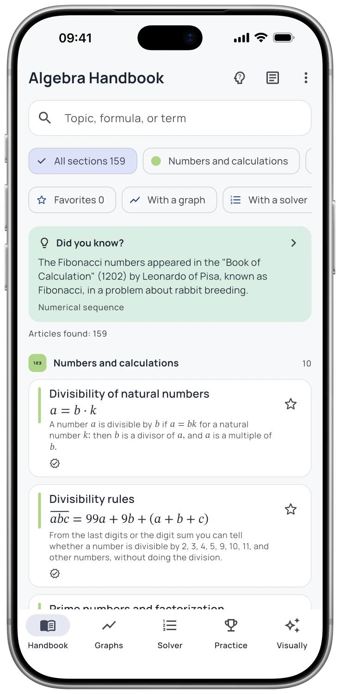

Bekijk hoe de grafiek verandert
Beweeg een schuifregelaar en bekijk hoe een parabool verschuift, een golf uitrekt of een raaklijn glijdt. Een vergelijking wordt iets dat u kunt verkennen.
Vind uw weg door de onbekenden
Elk 'x' heeft een verhaal.
Volg de stappen, beweeg de grafiek en bekijk het bewijs. Een toegankelijke manier om schoolalgebra en de basis van differentiaal- en integraalrekening te begrijpen.
Gratis download · optionele Pro-functies


App-screenshot
Functies
Beweeg een schuifregelaar en bekijk hoe een parabool verschuift, een golf uitrekt of een raaklijn glijdt. Een vergelijking wordt iets dat u kunt verkennen.
Oplossingen laten de stappen zien. Uitgewerkte voorbeelden en visuele bewijzen helpen u te begrijpen hoe een resultaat tot stand komt.
Nieuwe oefenopgaven, uitleg na elk antwoord en veelvoorkomende fouten helpen u de volgende stap te vinden.
Bekijk de app
Echte schermen. Een beter beeld van wat erin zit.


FAQ
Antwoorden voordat je begint
Ja. De handleiding en de bijbehorende referentiemateriaal zijn beschikbaar offline na installatie. Apple Intelligence-functies vereisen ook een compatibel apparaat en een gedownload systeemmodel.
Je kunt de app gratis downloaden. De referentiehandleiding blijft nuttig zonder Pro; aanvullende leermiddelen en AI-functies zijn afhankelijk van het Pro-abonnement van de app. De App Store en het in-app aankoopscherm tonen de actuele opties.
Nee. Je kunt de handleiding lezen en gebruiken zonder. De AI-tutor is optioneel en vereist een compatibele iPhone of iPad met Apple Intelligence ingeschakeld; ondersteunde talen zijn afhankelijk van je systeem.
De app is beschikbaar voor iPhone en iPad. Controleer de App Store-pagina voor de actuele vereisten voor het besturingssysteem en de apparaten.
Gratis download · optionele Pro-functies

De AI-tutor is een Pro-functie. Hiervoor zijn een compatibele iPhone of iPad, iOS/iPadOS 26 of nieuwer en ingeschakelde Apple Intelligence nodig. De beschikbaarheid verschilt per taal en regio. AI-antwoorden kunnen fouten bevatten.